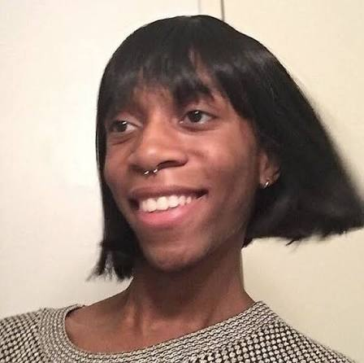

You grew beautifully, curious, passionate, and deeply loved 🌈
This year was so important. Even with the COVID pandemic, you got your best O/L results. You still wet your bed sometimes, hit your sister occasionally, and started getting really interested in biology and science. You discovered new hobbies, laughed more with friends, and your personality shined brighter than ever. Teenage chaos and brilliance, all in one.